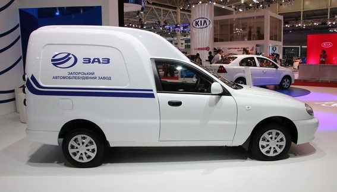
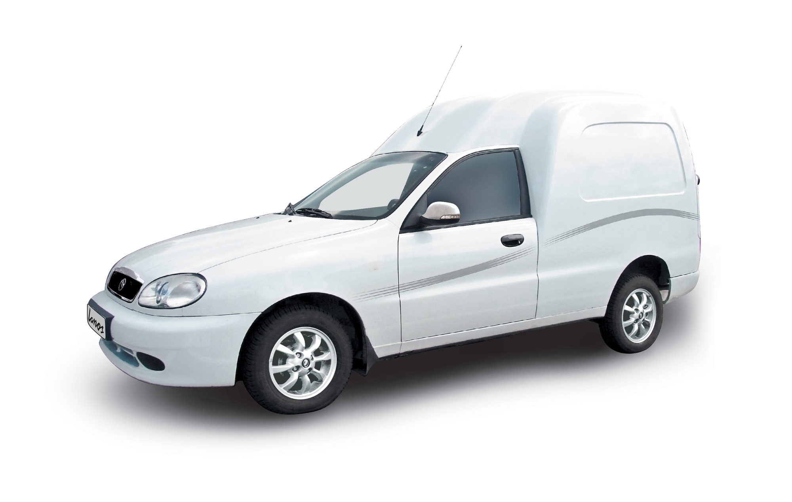

<div class="lines">
	<div id="put_parent" class="content" style="z-index: 100;">
					
		<div class="block_main">
			<h2>ЗАЗ Lanos Pick-up у продажу із новими опціями 22 травня 2014 </h2>
					<p><strong><em><span lang="UK">Модифікації автомобілю ЗАЗ&nbsp;</span></em></strong><strong><em><span lang="EN-US">Lanos</span></em></strong><strong><em><span lang="EN-US">&nbsp;</span></em></strong><strong><em><span lang="EN-US">Pick</span></em></strong><strong><em><span lang="UK">-</span></em></strong><strong><em><span lang="EN-US">up</span></em></strong><strong><em><span lang="EN-US">&nbsp;</span></em></strong><strong><em><span lang="UK">відтепер у продажі із подушкою безпеки водія.&nbsp;</span></em></strong></p>
					<p></p>
					<p style="text-align: justify;">Модель ЗАЗ Lanos Pick-Up  – випробуване часом рішення для вантажних перевезень в «середньоваговій категорії». Цей 2-х дверний фургон від ЗАЗ агрегатується 1,5-літровим двигуном General Motors з 5-ти-ступінчатою механічною коробкою передач, який відповідає стандартам токсичності Євро-4. Задля витривалості автомобіль має посилену задню підвіску, яка розрахована на перевезення 527 кг вантажу. Великий об'єм багажного відділення (2500 л), невелика навантажувальна висота та широкий кут відкриття дверей – дозволять з легкістю працювати в багажному відділенні людині середнього зросту.</p>
					<p style="text-align: justify;">Усі модифікації цієї комерційної моделі від ЗАЗ мають такі опції безпеки, як поперечний <em>брус, </em>що захищає від бічного удару,<em> інерційні ремені безпеки</em> та <em>індикатор непристебнутого ременю</em>. Відтепер – у комплектаціях «комфорт» та «люкс» доступна нова опція – <em>подушка безпеки водія</em>. Крім того, усі модифікації моделі мають у своєму арсеналі віднедавна <em>дзеркала із підігрівом та повторювачем повороту</em>. У залежності від модифікації, в авто може встановлюватись така необхідна опція комфорту, як <em>кондиціонер.</em> У всіх комплектаціях пропонується<em> радіопідготовка,</em> до якої входять 2 динаміки та антена.</p>
					<p style="text-align: justify;">Надійність і невибагливість в експлуатації – саме ті характеристики, які роблять Lanos Pick-up <strong>вигідним варіантом для міських і заміських перевезень.</strong> Серед інших важливих експлуатаційних якостей – <span style="text-decoration: underline;">економічність.</span> Витрати пального становлять від 5,8 л у заміському циклі. Вантажопідйомність автомобілю – &nbsp;527 кг. Такі характеристики Lanos Pick-up роблять його одним із найпопулярніших фургонів на ринку легкої комерційної техніки – придатних до використання у щоденній роботі як приватних підприємців, так і великих корпорацій.</p>
					<p style="text-align: justify;">Офіційні дилери Філії «АвтоЗАЗ-сервіс» пропонують сьогодні модель Lanos Pick-up за ціною від <strong>99&nbsp;185 грн*. </strong>Крім того, модель може бути оснащена газобалонним обладнанням, що дозволить автомобілісту економити витрати на пальне. Ціна Lanos Pick-up із ГБО становить від <strong>108&nbsp;745 грн*</strong>.</p>
					<p style="text-align: justify;"><strong>ЗАЗ Lanos Pick-up</strong> – справжній «трудівник»! Це саме той представник &nbsp;комерційного модельного ряду, який завдяки своїй витривалості та місткості у поєднанні із лояльною ціною стане незамінним помічником у повсякденних справах!</p>
					<p style="text-align: justify;"><span style="font-size: x-small;">&nbsp;*Ціну наведено станом на 22.05.2014 згідно діючого реєстру цін.</span></p>
					

		</div>
									
</div><!-- lines_in -->
		
</div>						